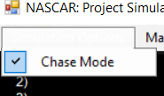
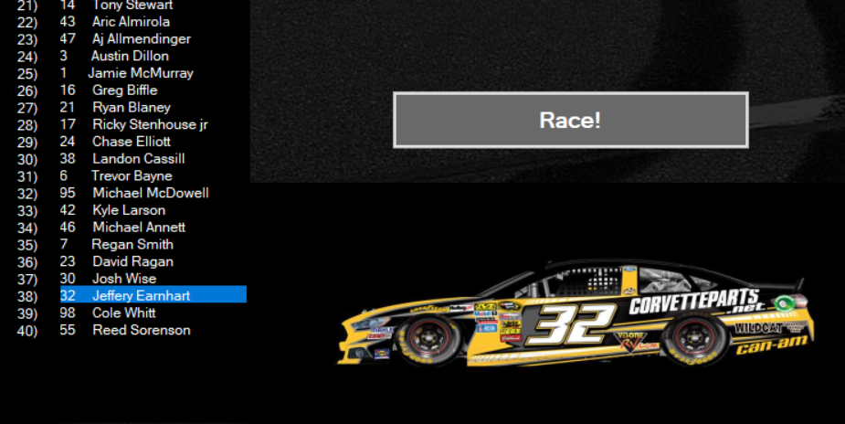
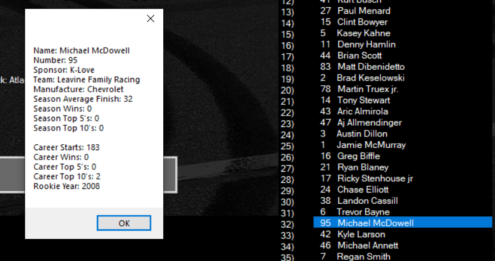

NASCAR Project Simulation is an application that was made to simulate the 2016 NASCAR Sprint Cup Series season using random number generators. The application records various statistics from the simulated results, such as average finish, number of wins, number of top 5 finishes, and number of top 10 finishes. In addition, the application provides historical data for drivers and updates it according to the simulation.
*DISCLAIMER: This program can only be used on Windows Operating Systems*
The program is very easy to use and manage. The picture above is what the application looks like after the first race is run. Clicking the button labeled "race" will simulate one race. There are three options in the menu: Simulation Options, Manage Simulation, and About.

The Chase is NASCAR's 2016 playoff format, where the last 10 races are broken up into 4 rounds.
The first 3 rounds are 3 races long, with the final round being 1 race. The top 16 drivers
make the playoffs, with 4 drivers being eliminated every round until there are 4 drivers left
to decide the championship. The points are reset for the playoff drivers after each round.
Clicking on the "Similation Options" tab will bring up the option to disable or enable it.
The Chase is enabled by default. This tab should only be accessed before the start of a new
season.
The "Manage Simulation" menu has one tab. Clicking on it will reset the standings, track number, and any statistics recorded during the season
There are two lists of drivers and car numbers. The left list displays the results from the last race ran, while the right list displays the current standings. Clicking on a driver from the left list will display the main paint scheme of the driver. All 40 drivers included in the game have a paint scheme.
Clicking on a driver from the right list will bring up a variety of statistics about the driver. This includes name, sponsor, manufacturuer, team, and season statistics such as top 5 finishes, top 10 finishes, wins, and average finish. Below this, there are several historical statistics such as rookie year and career wins. These will be updated as the season progresses.
This program was written by Dominik Bettini in 2016. There are several versions, including a Formula 1 simulator for the same year, but the version described here is the only surviving one.
This program is coded in C# and made with VisualStudio.
One of the oversights of this program is the fact that the user can disable the playoffs while they are happening. If this happens, the standings will not be displayed correctly. It is reccomended that the chase option is enabled or disabled at the beginning of the season.
You may have tried to run it on an outdated version of Windows, or with a Mac-OS system. Alternatively, you may have left the file unzipped.
The application is a .exe file that does not have an author listed on it. This draws some red flags from antivirus softwares, but there is nothing harmful about this particular file.
By updating the roster! Although the program is not being updated anymore, it can be edited freely in VisualBasic with new rosters.
The software was created by TheRCStudios (Dominik Bettini). All rights reserved.